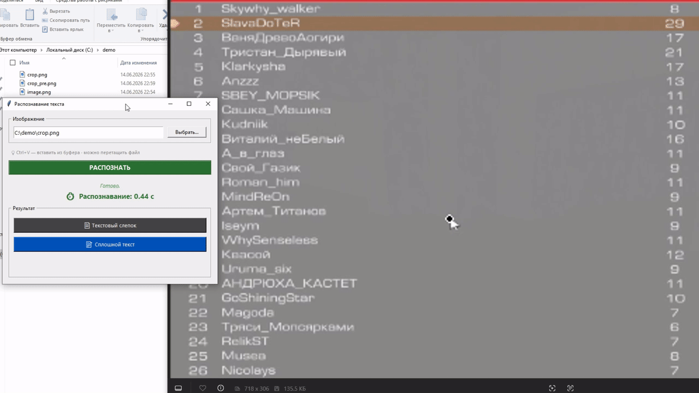
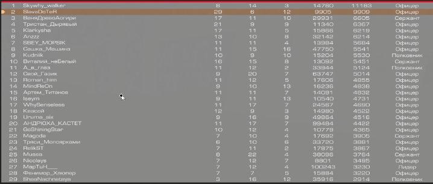

обработка
~7 с→~0.4 с
Короткий рассказ о том, как меняется распознавание результатов КВ в SCWA — что уже работает в новой версии и почему вам станет проще.
OCR — это сердце сервиса: вы загружаете скриншот итогов боя, а программа сама считывает с него таблицу. Сейчас распознавание держится на старом движке — он работает, но придирчив к качеству скрина и тратит на обработку несколько секунд. Мы готовим ему замену: собственную модель нового поколения, которая разбирает даже убитые скриншоты и делает это почти мгновенно.

На вход — худший возможный скрин: разрешение растянуто в 4:3, кадр снят с отката и сверху прогнан через Win+Shift+S. На выходе — чистая таблица примерно за 0.4 секунды. И это сырой вывод модели, без парсера и без правки никнеймов по списку из официального API.

4:3-растяжение · откат · Win+Shift+S — то, что обычный OCR не вывозит.
1 Skywhy_walker 8 14 3 14760 11183 Офицер
2 SlavaDoTeR 29 6 12 9905 9909 Офицер
3 ВеняДрввоАогири 17 11 10 29931 6605 Сержант
4 Тристан_Дырявый 21 9 9 11340 6367 Офицер
5 Klarkysha 17 11 5 15866 6219 Офицер
6 Anzzz 13 10 8 32142 6214 Офицер
7 SBEY_MOPSIK 11 11 4 13984 5684 Офицер
8 Сашка_Машина 11 15 16 47750 5541 Офицер
9 Kudniik 10 9 10 15204 5530 Полковник
10 Виталий_неБелый 16 15 8 13092 5451 Сержант
11 A_в_глаз 11 12 2 33944 5124 Полковник
12 Свой_ Газик 9 20 7 63747 5014 Офицер
13 Roman_him 11 12 5 17606 4855 Офицер
14 MindReOn 9 10 13 16236 4838 Офицер
15 Артем_Титанов 8 11 11 7 14091 4832 Офицер
16 Iseym 9 11 13 10540 4731 Офицер
17 WhySenseless 11 17 7 24567 4690 Офицер
18 Квасой 12 9 3 14980 4522 Офицер
19 Urume_six 9 16 9 49864 4516 Офицер
20 АНДРЮХА_КАСТЕТ 11 17 7 99484 4422 Офицер
21 GoShiningStar 10 12 4 10779 4365 Офицер
22 Magoda 7 10 4 17692 3905 Сержант
23 Тряси_Мопсярками 6 10 6 33720 3881 Офицер
24 RelikST 7 11 2 17875 3867 Офицер
25 Musea 8 22 4 38096 3764 Сержант
26 Nicolays 7 12 7 8801 3495 Офицер
27 MapTuH 7 12 4 100243 3230 Лидер
28 Фанимор_Хлюпөр 7 7 5 15884 3220 Офицер
29 SheaNachnetaya 3 16 12 35916 2914 Полковник
как есть, без постобработки — дальше слепок уходит в парсер и раскладывается по колонкам.
что меняется
куда идёт цена
Новый движок тяжелее в обслуживании, но цель ровно обратная подорожанию: по мере роста сервиса мы хотим со временем опустить подписку до ~400 ₽ за весь клан или ниже. Подписка остаётся одна на клан — рядовым игрокам платить не нужно, а актуальные условия всегда на сайте.
поддержать
Новая модель уже в работе. Чем больше кланов с нами, тем быстрее она доедет до всех — и тем доступнее станет сервис. Помочь можно двумя простыми вещами:
Спасибо, что читаете и пользуетесь SCWA. Любой фидбек — баги, идеи, критика — делает инструмент лучше. Увидимся на КВ 🤝
P.S. Хотите такое же оформление и на основном сайте? Возможно, обновим его вместе с выходом новой версии OCR — если наберётся достаточно желающих.